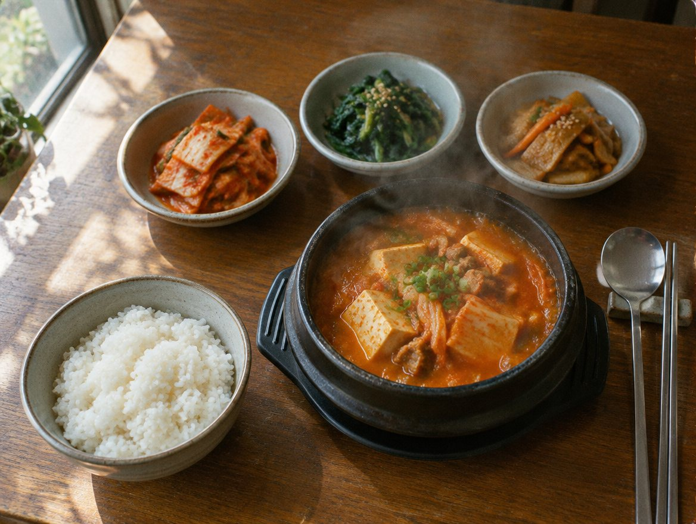
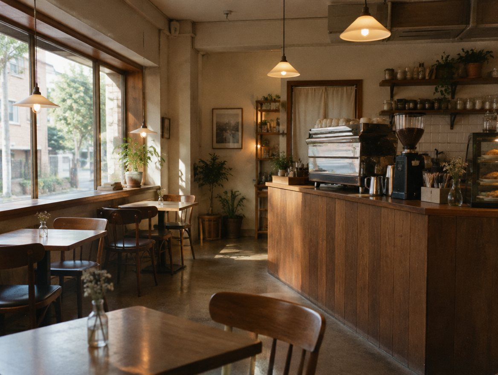
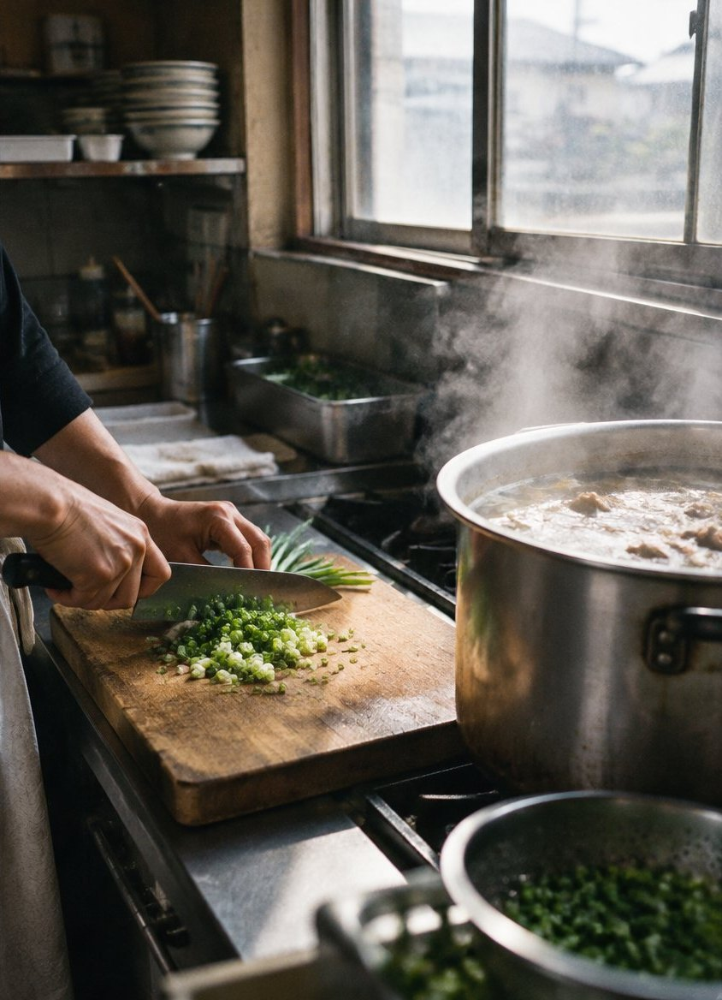
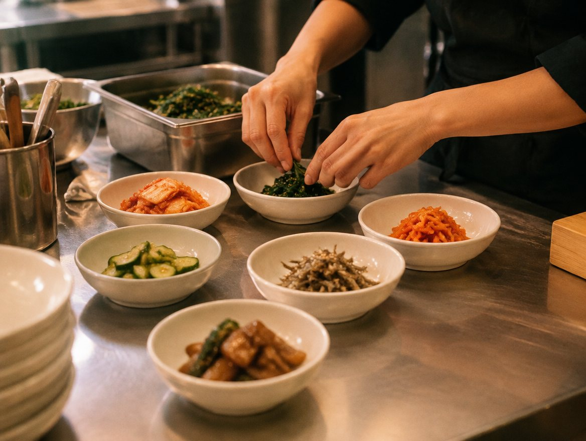
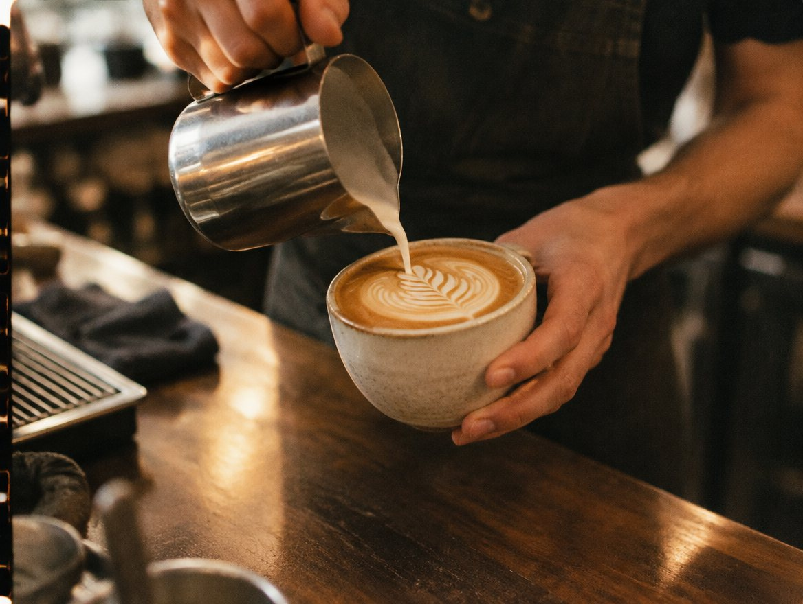
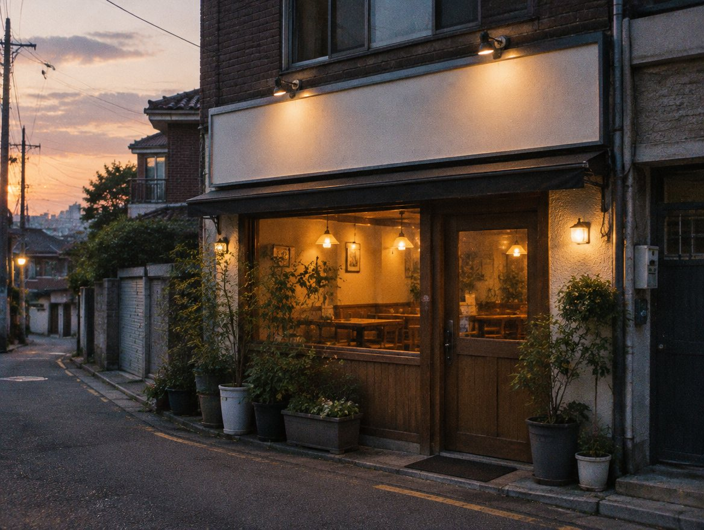

김치찌개 정식
1년 익힌 김치에 앞다리살을 넉넉히. 돌솥에 끓여 마지막 숟가락까지 뜨겁게 냅니다.


소담식탁은 하루에 지을 만큼만 짓고, 끓일 만큼만 끓입니다. 반찬은 그날 아침에 무쳐서 그날 다 냅니다.
그래서 메뉴는 많지 않습니다. 대신 오늘 나간 김치찌개가 내일도 같은 맛이도록, 국물은 매일 아침 처음부터 다시 냅니다.

1년 익힌 김치에 앞다리살을 넉넉히. 돌솥에 끓여 마지막 숟가락까지 뜨겁게 냅니다.

제철 채소로 그날 아침에 무칩니다. 무엇이 나올지는 장 본 뒤에 정해집니다.

점심 정리가 끝나는 3시부터는 카페입니다. 원두는 동네 로스터리에서 2주마다 받아 옵니다.
동네 시장에서 그날 쓸 채소를 삽니다.
멸치·다시마 육수를 처음부터 냅니다.
식사는 오후 3시까지.
핸드드립과 직접 담근 유자차.

8명까지 가능합니다. 하루 전까지 네이버 예약이나 전화로 남겨 주세요.
찌개는 용기에 담아 포장해 드립니다. 반찬은 매장에서만 드실 수 있어요.
건물 뒤 2대가 있고, 차면 50m 앞 공영주차장을 이용해 주세요.
경기 수원시 장안구 예시로 12, 1층 · 화서역 2번 출구 도보 7분
영업시간·휴무·가격은 네이버 플레이스에서 가장 최신으로 확인하실 수 있어요.
이런 홈페이지, 우리 가게도 만들 수 있어요
제작 신청하기